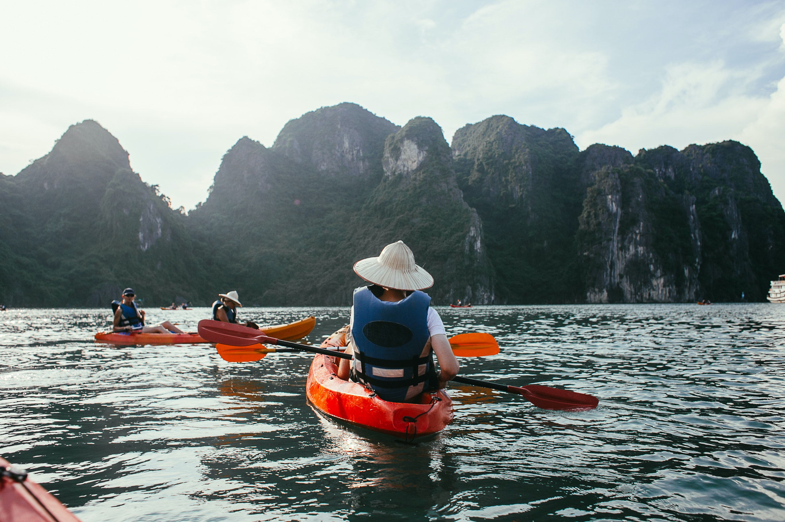

About
Moona Island was first discovered by Jed Yang in 2021 as he was cruising the open waters 400 nautical miles from the coast of Hawaii. As he approached the island, he noticed that it seemed deserted. Proceeding to take a closer look at the island, he realized that there was indeed no one on the island and claimed it for himself. The island had many natural attractions such as volcanoes, waterfalls, and a sophisticated river system that can take you around the island. Over the next 30 years he built the island from the ground up, creating an airport, establishing a government, and building communities on the island for his friends and newcomers. Today, Moona Island has become a populous island with over 10 million inhabitants. Jed is currently the President of the island and has created a very successful economy for the people.
Main Industries
Tourism
With Moona Island being in the Pacific Ocean, 400 nautical miles south of Hawaii, it has become an amazing tourist destination with multiple tourist attractions. With multiple natural attractions such as waterfalls and the volcano on the island, people have come from far and wide to experience these natural wonders. Moona Island is also home to the world’s largest amusement park, with many roller coasters and water rides that are connected to natural falls and lakes on the island.
Fishing
As Moona Island is of course an island, it is home to a robust fishing industry. The island has a fish farm that is located on the north side of the island and also has a dock on the north side that is home to many fishing boats that fishermen use for commercial fishing.
Lumber
Moona Island has ample natural resources, one of them being lumber. Lumber has become a big part of Moona Island’s economy as it is a big player in the space and is valued currently at 16 billion dollars as an industry.

Main Exports
Fish
As fishing is one of the biggest industries on Moona Island, it accounts for a big portion of our exports. Last year, Moon Island exported 250 million dollars worth of fish and seafood to other nations accounting for 20% of total exports by the island. Moona Island has some of the most desirable fish in the world, making it a prime location to import seafood goods from. Moona Island has vast amounts of Bluefin Tuna, one of the most expensive fish in the world, costing around $3000 to $5000 a pound. The island also produces caviar.
Lumber
Lumber is another very important natural resource to Moona Island. It represents 12% of total exports and the island exports palm logs to other countries that create building materials with the lumber.
Food
Moona Island exports a variety of fruits and vegetables to other countries. Fruits and vegetables account for 6% of total exports. The island's main exports are mangoes, bananas, pineapple, and coconut.

Modes of Transportation
The main method of transportation on the island are boats and rafts. With the river system connecting all the major points on the island it gives visitors a unique experience and is rather efficient compared to roads. Moona Island does have very well-created infrastructure and roads for those who do not want to participate in the rafting on the rivers.

Popular Dishes
Sushi
Sushi is a stable on Moona Island. Moona Island is home to one of the most desired fish in the world, bluefin tuna, making it a prime destination to try the freshest and tastiest bluefin tuna sushi and sashimi.
Lamb Skewers
Moona Island has street food vendors around the island. One of the staples that all the vendors have is lamb skewers. These skewers are grilled and seasoned with paprika, salt, and pepper and served on the spot, hot and ready to customers.
Fish and Chips
With fishing being a prevalent industry, Moona Island is known for its world-renown fish and chips. This dish is found at the street vendors across the island and is served with an island recipe tartar sauce that can’t be found anywhere else in the world.
Activities
Amusement Parks
Moona Island is home to the world’s largest amusement park. There are over 90 rollercoasters in the park with the most popular being the fastest and tallest rollercoaster in the world to date. There is also a water park with many rides. Some of the rides are connected to the many lakes and waterfalls around the island for a very unique experience.
Natural Attractions
Moona has many natural attractions littered around the island. The most notable being the dormant volcano on the island that has many hiking trails and amazing views of the whole island. There are also many waterfalls around the island that people can swim under and enjoy and amazing beaches.
Rafting
As mentioned earlier, rafting is a way of life on Moona Island. Locals and tourists primarily travel on rafts to get around the island making it one of the best activities to take part in. Tourists can either rent a raft they can take themselves or let a local tour them around on a taxi service raft. Rafting is something you should give a try.

Banner Beach Photo, Waterfall and Lake Photo, Logs Photos, Raft near Mountain
Rollercoaster Photo, Fish and Chips, Sashimi Photo, Beach with Dog Photo, Raft Photo
Waterpark Photo, Volcano Photo, Volcano Photo, Banner JPG, Banner Affinity Photo Download
{kind=link}
Bye Animation Affinity Photo Download, Bye JPG, Flag Affinity Photo Download, Flag JPG, Background Diamond, Favicon